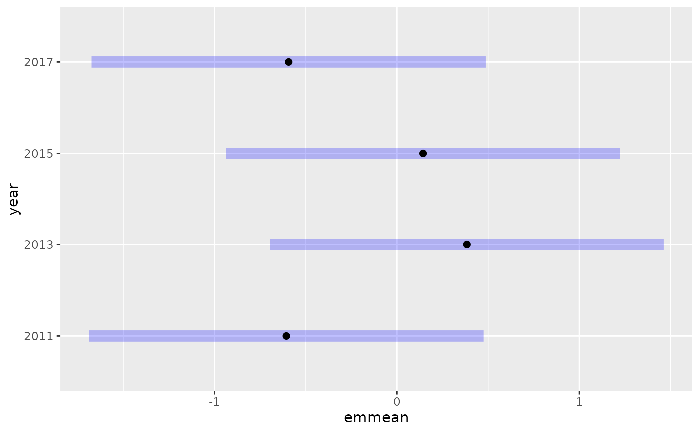
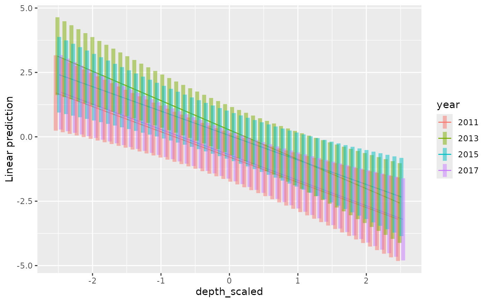

Methods for using the emmeans package with sdmTMB. The emmeans package computes estimated marginal means for the fixed effects.
For delta/hurdle models, you can specify which component to analyze using the
model argument: model = 1 for the binomial component (encounter
probability) or model = 2 for the positive component (e.g., gamma for
delta_gamma()). By default, model = 1.
Examples
mesh <- make_mesh(pcod_2011, c("X", "Y"), cutoff = 20)
fit <- sdmTMB(
present ~ as.factor(year),
data = pcod_2011, mesh = mesh,
family = binomial()
)
fit
#> Spatial model fit by ML ['sdmTMB']
#> Formula: present ~ as.factor(year)
#> Mesh: mesh (isotropic covariance)
#> Data: pcod_2011
#> Family: binomial(link = 'logit')
#>
#> Conditional model:
#> coef.est coef.se
#> (Intercept) -0.61 0.55
#> as.factor(year)2013 0.99 0.22
#> as.factor(year)2015 0.75 0.22
#> as.factor(year)2017 0.01 0.22
#>
#> Matérn range: 48.45
#> Spatial SD: 1.84
#> ML criterion at convergence: 564.495
#>
#> See ?tidy.sdmTMB to extract these values as a data frame.
emmeans::emmeans(fit, ~ year)
#> year emmean SE df lower.CL upper.CL
#> 2011 -0.606 0.551 963 -1.688 0.475
#> 2013 0.384 0.550 963 -0.695 1.463
#> 2015 0.143 0.551 963 -0.937 1.224
#> 2017 -0.594 0.551 963 -1.674 0.487
#>
#> Results are given on the logit (not the response) scale.
#> Confidence level used: 0.95
emmeans::emmeans(fit, pairwise ~ year)
#> $emmeans
#> year emmean SE df lower.CL upper.CL
#> 2011 -0.606 0.551 963 -1.688 0.475
#> 2013 0.384 0.550 963 -0.695 1.463
#> 2015 0.143 0.551 963 -0.937 1.224
#> 2017 -0.594 0.551 963 -1.674 0.487
#>
#> Results are given on the logit (not the response) scale.
#> Confidence level used: 0.95
#>
#> $contrasts
#> contrast estimate SE df t.ratio p.value
#> year2011 - year2013 -0.9901 0.222 963 -4.467 0.0001
#> year2011 - year2015 -0.7496 0.220 963 -3.404 0.0039
#> year2011 - year2017 -0.0127 0.221 963 -0.057 0.9999
#> year2013 - year2015 0.2405 0.217 963 1.110 0.6837
#> year2013 - year2017 0.9774 0.223 963 4.390 0.0001
#> year2015 - year2017 0.7369 0.222 963 3.320 0.0052
#>
#> Results are given on the log odds ratio (not the response) scale.
#> P value adjustment: tukey method for comparing a family of 4 estimates
#>
emmeans::emmeans(fit, pairwise ~ year, type = "response")
#> $emmeans
#> year prob SE df lower.CL upper.CL
#> 2011 0.353 0.126 963 0.156 0.617
#> 2013 0.595 0.133 963 0.333 0.812
#> 2015 0.536 0.137 963 0.281 0.773
#> 2017 0.356 0.126 963 0.158 0.619
#>
#> Confidence level used: 0.95
#> Intervals are back-transformed from the logit scale
#>
#> $contrasts
#> contrast odds.ratio SE df null t.ratio p.value
#> year2011 / year2013 0.372 0.0823 963 1 -4.467 0.0001
#> year2011 / year2015 0.473 0.1040 963 1 -3.404 0.0039
#> year2011 / year2017 0.987 0.2180 963 1 -0.057 0.9999
#> year2013 / year2015 1.272 0.2760 963 1 1.110 0.6837
#> year2013 / year2017 2.658 0.5920 963 1 4.390 0.0001
#> year2015 / year2017 2.089 0.4640 963 1 3.320 0.0052
#>
#> P value adjustment: tukey method for comparing a family of 4 estimates
#> Tests are performed on the log odds ratio scale
#>
emmeans::emmeans(fit, pairwise ~ year, adjust = "none")
#> $emmeans
#> year emmean SE df lower.CL upper.CL
#> 2011 -0.606 0.551 963 -1.688 0.475
#> 2013 0.384 0.550 963 -0.695 1.463
#> 2015 0.143 0.551 963 -0.937 1.224
#> 2017 -0.594 0.551 963 -1.674 0.487
#>
#> Results are given on the logit (not the response) scale.
#> Confidence level used: 0.95
#>
#> $contrasts
#> contrast estimate SE df t.ratio p.value
#> year2011 - year2013 -0.9901 0.222 963 -4.467 <.0001
#> year2011 - year2015 -0.7496 0.220 963 -3.404 0.0007
#> year2011 - year2017 -0.0127 0.221 963 -0.057 0.9543
#> year2013 - year2015 0.2405 0.217 963 1.110 0.2675
#> year2013 - year2017 0.9774 0.223 963 4.390 <.0001
#> year2015 - year2017 0.7369 0.222 963 3.320 0.0009
#>
#> Results are given on the log odds ratio (not the response) scale.
#>
e <- emmeans::emmeans(fit, ~ year)
plot(e)

e <- emmeans::emmeans(fit, pairwise ~ year)
confint(e)
#> $emmeans
#> year emmean SE df lower.CL upper.CL
#> 2011 -0.606 0.551 963 -1.688 0.475
#> 2013 0.384 0.550 963 -0.695 1.463
#> 2015 0.143 0.551 963 -0.937 1.224
#> 2017 -0.594 0.551 963 -1.674 0.487
#>
#> Results are given on the logit (not the response) scale.
#> Confidence level used: 0.95
#>
#> $contrasts
#> contrast estimate SE df lower.CL upper.CL
#> year2011 - year2013 -0.9901 0.222 963 -1.560 -0.420
#> year2011 - year2015 -0.7496 0.220 963 -1.316 -0.183
#> year2011 - year2017 -0.0127 0.221 963 -0.581 0.556
#> year2013 - year2015 0.2405 0.217 963 -0.317 0.798
#> year2013 - year2017 0.9774 0.223 963 0.404 1.550
#> year2015 - year2017 0.7369 0.222 963 0.166 1.308
#>
#> Results are given on the log odds ratio (not the response) scale.
#> Confidence level used: 0.95
#> Conf-level adjustment: tukey method for comparing a family of 4 estimates
#>
summary(e, infer = TRUE)
#> $emmeans
#> year emmean SE df lower.CL upper.CL t.ratio p.value
#> 2011 -0.606 0.551 963 -1.688 0.475 -1.100 0.2715
#> 2013 0.384 0.550 963 -0.695 1.463 0.698 0.4854
#> 2015 0.143 0.551 963 -0.937 1.224 0.260 0.7948
#> 2017 -0.594 0.551 963 -1.674 0.487 -1.078 0.2812
#>
#> Results are given on the logit (not the response) scale.
#> Confidence level used: 0.95
#>
#> $contrasts
#> contrast estimate SE df lower.CL upper.CL t.ratio p.value
#> year2011 - year2013 -0.9901 0.222 963 -1.560 -0.420 -4.467 0.0001
#> year2011 - year2015 -0.7496 0.220 963 -1.316 -0.183 -3.404 0.0039
#> year2011 - year2017 -0.0127 0.221 963 -0.581 0.556 -0.057 0.9999
#> year2013 - year2015 0.2405 0.217 963 -0.317 0.798 1.110 0.6837
#> year2013 - year2017 0.9774 0.223 963 0.404 1.550 4.390 0.0001
#> year2015 - year2017 0.7369 0.222 963 0.166 1.308 3.320 0.0052
#>
#> Results are given on the log odds ratio (not the response) scale.
#> Confidence level used: 0.95
#> Conf-level adjustment: tukey method for comparing a family of 4 estimates
#> P value adjustment: tukey method for comparing a family of 4 estimates
#>
as.data.frame(e)
#> Warning: Note: 'as.data.frame' has combined your 2 sets of results into one object,
#> and this affects things like adjusted P values. Refer to the annotations.
#> year contrast emmean SE df lower.CL upper.CL
#> 2011 . -0.6063952 0.5511170 963 -2.1569729 0.9441824
#> 2013 . 0.3836816 0.5497815 963 -1.1631386 1.9305018
#> 2015 . 0.1431957 0.5505275 963 -1.4057236 1.6921150
#> 2017 . -0.5937169 0.5506319 963 -2.1429298 0.9554960
#> . year2011 - year2013 -0.9900768 0.2216228 963 -1.6136166 -0.3665369
#> . year2011 - year2015 -0.7495909 0.2201979 963 -1.3691217 -0.1300601
#> . year2011 - year2017 -0.0126783 0.2209364 963 -0.6342868 0.6089302
#> . year2013 - year2015 0.2404859 0.2167459 963 -0.3693327 0.8503044
#> . year2013 - year2017 0.9773985 0.2226493 963 0.3509706 1.6038264
#> . year2015 - year2017 0.7369126 0.2219749 963 0.1123823 1.3614430
#>
#> Results are given on the logit (not the response) scale.
#> Confidence level used: 0.95
#> Conf-level adjustment: bonferroni method for 10 estimates
# interaction of factor with continuous predictor:
fit2 <- sdmTMB(
present ~ depth_scaled * as.factor(year),
data = pcod_2011, mesh = mesh,
family = binomial()
)
fit2
#> Spatial model fit by ML ['sdmTMB']
#> Formula: present ~ depth_scaled * as.factor(year)
#> Mesh: mesh (isotropic covariance)
#> Data: pcod_2011
#> Family: binomial(link = 'logit')
#>
#> Conditional model:
#> coef.est coef.se
#> (Intercept) -0.75 0.48
#> depth_scaled -0.98 0.25
#> as.factor(year)2013 1.03 0.23
#> as.factor(year)2015 0.79 0.23
#> as.factor(year)2017 0.01 0.23
#> depth_scaled:as.factor(year)2013 -0.16 0.26
#> depth_scaled:as.factor(year)2015 0.03 0.26
#> depth_scaled:as.factor(year)2017 -0.01 0.26
#>
#> Matérn range: 33.38
#> Spatial SD: 2.19
#> ML criterion at convergence: 546.074
#>
#> See ?tidy.sdmTMB to extract these values as a data frame.
# slopes for each level:
emmeans::emtrends(fit2, ~ year, var = "depth_scaled")
#> year depth_scaled.trend SE df lower.CL upper.CL
#> 2011 -0.980 0.250 959 -1.47 -0.490
#> 2013 -1.140 0.247 959 -1.63 -0.655
#> 2015 -0.950 0.238 959 -1.42 -0.483
#> 2017 -0.987 0.244 959 -1.47 -0.507
#>
#> Confidence level used: 0.95
# test difference in slopes:
emmeans::emtrends(fit2, pairwise ~ year, var = "depth_scaled")
#> $emtrends
#> year depth_scaled.trend SE df lower.CL upper.CL
#> 2011 -0.980 0.250 959 -1.47 -0.490
#> 2013 -1.140 0.247 959 -1.63 -0.655
#> 2015 -0.950 0.238 959 -1.42 -0.483
#> 2017 -0.987 0.244 959 -1.47 -0.507
#>
#> Confidence level used: 0.95
#>
#> $contrasts
#> contrast estimate SE df t.ratio p.value
#> year2011 - year2013 0.16009 0.261 959 0.613 0.9281
#> year2011 - year2015 -0.03052 0.265 959 -0.115 0.9995
#> year2011 - year2017 0.00651 0.261 959 0.025 1.0000
#> year2013 - year2015 -0.19061 0.258 959 -0.738 0.8817
#> year2013 - year2017 -0.15358 0.259 959 -0.593 0.9342
#> year2015 - year2017 0.03703 0.263 959 0.141 0.9990
#>
#> P value adjustment: tukey method for comparing a family of 4 estimates
#>
emmeans::emmip(fit2, year ~ depth_scaled,
at = list(depth_scaled = seq(-2.5, 2.5, length.out = 50)), CIs = TRUE)
#> Warning: `position_dodge()` requires non-overlapping x intervals.
#> Warning: `position_dodge()` requires non-overlapping x intervals.

# delta/hurdle models:
fit_delta <- sdmTMB(
density ~ as.factor(year),
data = pcod_2011, spatial = "off",
family = delta_gamma()
)
# binomial component (encounter probability):
emmeans::emmeans(fit_delta, ~ year, model = 1)
#> year emmean SE df lower.CL upper.CL
#> 2011 -0.4455 0.129 960 -0.6994 -0.192
#> 2013 0.2344 0.130 960 -0.0207 0.489
#> 2015 0.0841 0.130 960 -0.1706 0.339
#> 2017 -0.5108 0.133 960 -0.7725 -0.249
#>
#> Results are given on the logit (not the response) scale.
#> Confidence level used: 0.95
# positive component (gamma):
emmeans::emmeans(fit_delta, ~ year, model = 2)
#> year emmean SE df lower.CL upper.CL
#> 2011 4.73 0.126 960 4.48 4.97
#> 2013 4.28 0.108 960 4.06 4.49
#> 2015 4.63 0.112 960 4.41 4.85
#> 2017 4.21 0.132 960 3.95 4.47
#>
#> Results are given on the log (not the response) scale.
#> Confidence level used: 0.95